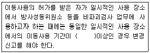
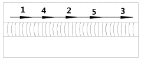
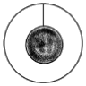
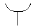
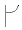

방사선비파괴검사기사(구) (2013-03-10 기출문제)
1과목: 방사선투과시험원리
1. 다음 중 Co-60의 비방사능은 어느 것에 의존하는가?
- 재료의 Young율
- 재료의 원자번호
- 재료의 화학식
- 재료가 원자로에 있었던 시간
(정답률: 알수없음)

2. 방사선투과시험에서 기하학적불선명도에 영향을 주는 요인과 거리가 먼 것은?
- 선원의 종류
- 초점 또는 선원의 크기
- 선원과 시험체 사이의 크기
- 시험체와 필름 사이의 거리
(정답률: 알수없음)
3. 방사선투과시험시 필름의 콘트라스트를 높이기 위해서는?
- 전압을 내리고 노출시간을 늘린다.
- 전압을 올리고 노출시간을 줄인다.
- 전류를 올리고 노출시간을 줄인다.
- 전류를 고정시키고 노출시간을 줄인다.
(정답률: 알수없음)
4. 맞대기 용접부를 방사선투과사진 촬영시 선형투과도계를 놓는 방법이 바르게 설명된 것은?
- 필름에 밀착시킨다.
- 가는 선이 시험체의 중양을 향하도록 한다.
- 별도의 규정이 없으면 선원쪽 시험체 표면에 놓는다.
- 방서선빔의 방향과 가능한 한 평행이 되도록 놓는다.
(정답률: 알수없음)
5. 필름 현상시 정지과정이 누락된 경우 필름에 나타날 수 있는 현상은?
- 기포
- 주름
- 흰반점
- 농도 얼룩
(정답률: 알수없음)
6. 저에너지 감마선원으로 반감기가 가장 짧아선원의 안정적인 공급이 중요한 선원은?
- Gd-153
- Se-75
- Yb-169
- Co-60
(정답률: 알수없음)
7. 다음 중 비파괴시험적인 요소를 포함하고 있는 것은?
- 경도시험
- 굽힘시험
- 충격시험
- 인장시험
(정답률: 알수없음)
8. 육안검사에 대한 설명으로 틀린 것은?
- 표면은 깨끗해야 한다.
- 사용 중 검사가 가능하다.
- 표면결함만 검출이 가능하다.
- 표면 및 표면하 결함 검출이 가능하다.
(정답률: 알수없음)
9. 초음파탐상시험에서 초음파가 경계면에 경사각으로 입사하여 기체의 경계면에 도달하였을 경우 반사되는 초음파의 종류는?
- 종파
- 횡파
- 판파
- 표면파
(정답률: 알수없음)
10. 침투탐상검사의 적용용도에 대한 설명으로 옳은 것은?
- 검사체에 존재하는 표면 잔류응력을 확인한다.
- 검사체의 표면에 존재하는 불연속을 검출한다.
- 검사체에 존재하는 이종성분을 검출한다.
- 검사체에 존재하는 불연속의 크기, 위치, 깊이를 확인하고 평가한다.
(정답률: 알수없음)
11. 가열양극 할로겐법의 특성을 설명한 것 중 옳은 것은?
- 대기압 하에서 작업할 수 없다.
- 할로겐 추적가스에만 응답할 수 있다.
- 기름에 막혀 있는 누설은 검출할 수 없다.
- 할로겐 추적가스에 장시간 노출되어도 누설신호가 사라지지 않는다.
(정답률: 알수없음)
12. 비파괴시험원리와 그에 따른 비파괴시험방법이 틀린 것은?
- 모세관현상이용-침투탐상검사
- 적외선에너지 변화이용-중성자투과검사
- 유체흐름, 압력차이요-누설검사
- 음파의 진행과 반사-초음파탐상검사
(정답률: 알수없음)
13. 비파괴검사법 중 검사속도가 빠르고 자동화가 쉬우며, 전도체의 표면 결함검출에 감도가 우수한 것은?
- 누설검사
- 초음파탐상시험
- 와전류탐상시험
- 방사선투과시험
(정답률: 알수없음)
14. 침투탐상시험중 가장 탐상감도가 우수한 것은?
- 용제성 염색침투탐상
- 용제성 형광침투탐상
- 후유화성 염색침투탐상
- 후유화성 형광침투탐상
(정답률: 알수없음)
15. 중성자투과시험에 이용되는 중성자빔의 발생원과 거리가 먼것은?
- 원자로
- 입자가속기
- X선 발생기
- 방사성 동위원소
(정답률: 알수없음)
16. 다음 중 누설검사를 하는 이유가 아닌 것은?
- 표면의 불연속을 검출하기 위해
- 표준에서 벗어난 누설률과 부적절한 제품을 검출하기 위해
- 시스템 작동에 방해되는 재료의 누설손실을 방지하기 위해
- 돌발적인 누설에 기인하는 유해한 환경적인 요소를 방지하기 위해
(정답률: 알수없음)
17. 철강재를 용접하여 일정시간 경과 후 표면 및 표면직하의 결함 검출에 경제적이고 손쉬운 비파괴검사법은?
- 음향방출시험
- 초음파탐상시험
- 자분탐상시험
- 방사선투과시험
(정답률: 알수없음)
18. 와류탐상검사에 관한 설명으로 틀린 것은?
- 관통형 코일을 보빈코일이라고 한다.
- 내삽형 프로브는 관의 내면검사에 유리하다.
- 프로브형 코일은 표면결함 탐상에 쓰인다.
- 자기비교코일은 선 또는 관재의 시험체에 이용한다.
(정답률: 알수없음)
19. 자분 분산매가 가져야 할 특성에 대한 설명중 옳은 것은?
- 휘발성이 크고, 점도는 낮아야 한다.
- 점도가 낮고, 장기간 변질이 없어야 한다.
- 인화점이 낮고, 인체에 유해하지 않아야 한다.
- 적심성은 나쁘며, 결함에서 활발한 화학반응이 이러나야 한다.
(정답률: 알수없음)
20. 일반적으로 검사후 결함의 크기 및 형상을 장기적으로 보전하기 적합하여 많이 사용되는 비파괴검사법은?
- 누설시험
- 자분탐상시험
- 방사선투과시험
- 침투탐상시험
(정답률: 알수없음)
2과목: 방사선투과검사
21. 방사선투과검사를 통해 결함의 깊이를 알고자 할때의 검사 방법으로 가장 적합한 것은?
- Micro Radiography
- Flash Radiography
- Electron Radiography
- Parallax Radiography
(정답률: 알수없음)
22. 필름과 방사선원의 거리가 1m였을 때 노출시간 100초를 좋은 사진을 얻었다. 필름과 방사선원의 거리를 1.5m로 변경했을 경우 동일한 질의 사진을 얻으려면 노출시간을 얼마로 하면 되는가?
- 150초
- 225초
- 250초
- 280초
(정답률: 알수없음)
23. 방사선투과사진의 상질에 관계되어지는 요인에 대한 설명으로 옳은 것은?
- 필름특성곡선은 X선 필름에 조사된 X선의 양(노출량)과 사진농도와의 관계를 나타낸 곡선으로 감도, 콘트라스트 등을 알기 위해 이용된다.
- 노출량을 E로 나타낼 때. E를 횡축으로하고, 종축을 시험체의 두께T로 하여 특성곡선을 나타낸다.
- 피사체콘트라스트는 전압이 올라가면 증가하고, 두께차가 클수록 ,산란선이 적을수록 증가한다.
- 필름 감응속도와 필름콘트라스트의 관계는 서로 비례관계가 성립되는데, 즉 필름 감응속도가 빠른 것은 필름 콘트라스트가 높다.
(정답률: 알수없음)
24. 공업용 방사선투과 사진을 촬영할 때 기본적인 3가지 필수사항이 아닌 것은?
- 필름
- 차폐물
- 방사선 선원
- 시험 대상물
(정답률: 알수없음)
25. lr-192 감마선 조사장치를 선택할 때 고려하지 않아도 되는 것은?
- 선원의 강도
- 감마선원의 에너지
- 용기의 노출방식
- 선원의 가하학적 크기
(정답률: 알수없음)
26. 선원의 크기가 3.2mm인 lr-192 30Ci가 있다. 시험물과 필름간 거리가 38mm인 강용접부위를 촬영할 때 최소로 요구되는 선원과 시험체 사이의 거리는?
- 167mm
- 2⑤mm
- 243mm
- 281mm
(정답률: 알수없음)
27. 방사선투과검사로 다음중 검출하기 어려운 불연속은?
- 기공
- 언더컷
- 라미네이션
- 용입불량
(정답률: 알수없음)
28. V형 개선된 맞대기 용접부에 초층 용접아크가 불안정하여 루트부에 가늘고 긴 선상의 기공이 발생하였다. 이는 방사선투과사진에서 용접부 중앙에 긴 선상의 지시를 나타내는 데 이를 무엇이라 하는가?
- 중공비드
- 융합불량
- 용입부족
- 불로우홀
(정답률: 알수없음)
29. 다음중 방사선투시법에 사용되는 방사선 검출장치는?
- 필름
- 형광판
- GM계수관
- 반도체 검출기
(정답률: 알수없음)
30. 일반적인 공영용X선 발생장치에서, 필라멘트에서 요구하는 전압을 만드는 변압기는?
- 자동변압기
- 승압변압기
- 감압변압기
- 고전압변압기
(정답률: 알수없음)
31. X선 필름에 직접 작용하는 연박증감지의 효과를 설명한 것으로 틀린 것은?
- 산란방사선의 영향을 감소시켜 투과시진 상의 선명도를 감소시킨다.
- 필름의 사진작용을 증대시킨다.
- 1차방사선에 비패 파장이 긴 산란방사선을 흡수한다.
- 산란방사선의 영향을 감소시켜 일차방사선을 더 강화시킨다.
(정답률: 알수없음)
32. 관의 원주용접부의 촬영방법 중 전원주를 동시에 촬영하는 방법은?
- 내부선원 촬영방법
- 내부필름 촬영방법
- 이중벽 평면 촬영방법
- 이중벽 양면 촬영방법
(정답률: 알수없음)
33. X선 발생장치에서 필터의 역할 중 틀린 것은?
- 반가층을 증가시킴
- 흡수계수를 감소시킴
- 최단파장은 더욱짧아짐
- 장파장의 흡수로 평균 파장이 짧아짐
(정답률: 알수없음)
34. 일반적인 자동현상기의주요 3부분에 해당되지 않는 것은?
- 필름주입구
- 필름현상처리부
- 필름건조부
- 필름관찰부
(정답률: 알수없음)
35. 1MeV이상의 고에너지 X선 발생장치에 대한설명으로 틀린것은?
- 주로 입자가속기를 이용한다.
- X선 관을 사용한다.
- 높은 관전압을 필요로 한다.
- 아주 두꺼운 시험체의 시험에 적용한다.
(정답률: 알수없음)
36. 공업용 X선발생장치에 관한 설명으로 옳은 것은?
- X선 발생장치의 필라멘트는 크기가 작을수록 좋다.
- 냉각제로 쓰이는 물질은 유전성이 낮은 물질이 사용된다..
- 중심축으로부터 이탈된 X선빔을 제거하고, 전기적으로 차폐하는 목적으로 후드를 사용한다.
- 전자빔에 대한 표적의 방향은 초점의 크기와 모양에 영향을 받으며, 최대강도는 20°정도에서 나타난다.
(정답률: 알수없음)
37. 방사성 동위원소의 붕괴형태가 아닌 것은?
- 전자포획
- 하전입자의 충돌
- 감마선 방출
- 자발 핵분열
(정답률: 알수없음)
38. 높은 투과사진 콘트라스트를 얻기 위한 조건이 아닌 것은?
- 필름콘트라스트가 커야한다.
- 선흡수계수가 커야한다.
- 기하학적 보정계수가 커야한다.
- 산란비가 커야한다.
(정답률: 알수없음)
39. 다음 중 단조할 때에 발생되는 결함이 아닌 것은?
- 심
- 랩
- 찢어짐
- 콜드셧
(정답률: 알수없음)
40. 방사선투과검사를 할 때 선명하고 실물과 가장 가까운 크기의 상을 얻기위하여 그림자 형성과 관련한 기하학적원리를 설명한 것으로 틀린 것은?
- 초점은 가능한 한 커야한다.
- 초점과 검사체간의 거리는 가능한 한 멀어야 한다.
- 필름은 가능한 한 검사체와 밀착시켜야 한다.
- 방사선 빔은 가능한 한 필름과 수직이 되도록 유지해야한다.
(정답률: 알수없음)
3과목: 방사선안전관리,관련규격및컴퓨터활용
41. 보일러 및 압력용기에 대한 표준방사선투과검사(ASME Sec.V.Art.22 SE-94)에서 권고하는 필름걸이 사이의 최소 간격은?
- 6mm
- 12.7mm
- 25.4mm
- 38mm
(정답률: 알수없음)
42. 강용접 이음부의 방사선투과 시험방법(KS B 0845)에서 평판 맞대기 용접부를 시험할 때의 설명으로 옳은 것은?
- 계조계의 두께가 변화하는 방향이 시험부와 직각되게 놓는다.
- 2개의 투과도계를 가는 선이 바깥쪽으로 용접부 양쪽에 놓는다.
- X선 투과시험으로만 시행해야한다.
- 규격에 결함의 허용등급은 정해져 있다.
(정답률: 알수없음)
43. 보일러 및 압력용기에 대한 표준방사선투과검사(ASMESec.V.Art.2)에 따라 방사선 투과검사를 할 경우 요구되는 선원-필름간의 최소거리는? (단, 유효초점크기는 2.5mm, 시험체 두께는 10mm, 시험체-필름간 거리는 4mm,기하학적 불선명도는 0.5mm)이다.)
- 65mm
- 78mm
- 84mm
- 92mm
(정답률: 알수없음)
44. 보일러 및 압력용기에 대한 표준방사선투과검사(ASME Sec.V.Art.2)에서 강용접부를 촬영하여 투과도계 부위의 농도가 3.0인 값을얻었다. 이 방사선 투과사진에서 시험범위 내의 용접부 허용농도 범위는?
- 2.55~3.45
- 2.55~3.90
- 2.10~3.90
- 2.10~3.45
(정답률: 알수없음)
45. 조사선량의 단위는 다음 어느것을 측정하는 단위인가?
- 알파선
- X선과 감마선
- RBE
- 인체세포의 방사선 손상
(정답률: 알수없음)
46. 주강품의 방사선투과시험방법(KS D 0227)에 의한 주강품의 방사선 투과사진 등급분류에 관한 설명으로 옳은 것은?
- 수축결함은 모두 6급으로 한다.
- 개재물의 경우 호칭 두께의 1/2또는 15mm이상의 크기는 6급이다.
- 모래박힘의 경우 호칭 두께 또는 30mm를 초과하는 치수의 흠이 있는 경우 6급이다.
- 블로우홀의 경우 호칭 두께의 1/3 또는 15mm를 초과하는 치수의 흠이 있는 경우 6급이다.
(정답률: 알수없음)
47. 강용접 이음부의 방사선투과 시험방법(KS B 0845)에서 결함의 종별 조합이 잘못 짝지어진 것은?
- 4종 - 슬래그혼입
- 3종 - 갈라짐
- 2종 - 용입불량
- 1종 - 둥근블로홀
(정답률: 알수없음)
48. 보일러 및 압력용기에 대한 표준방사선투과검사(ASME Sec.V.Art.2)에서 모재 두께가 일정한 용접부의 촬영시 기본적인 투과도계의 부착방법으로 옳은 것은?
- 유공형 투과도계는 용접부에는 놓지 않는다.
- 선형 투과도계선이 용접길이와 직각방향에 놓는다.
- 선형 투과도계는 용접부 양끝단에 각각 2개씩 놓는다.
- 유공형 투과도계는 용접부 양끝단에 각각 2개씩 놓는다.
(정답률: 알수없음)
49. 원자력 안전법 시행규칙에서 규정하고 있는 일시적인 사용장소의 변경신고에 관한 내용중( )에 들어갈 적절한 기간은?

- 2월
- 5월
- 6월
- 12월
(정답률: 알수없음)
50. 보일러 및 압력용기에 대한 표준방사선투과검사(ASME Sec.V.Art.2)에서 규정하고 있는 사항으로 틀린 것은?
- 필름, 증감지에 대하여 규정하고 있다.
- 투과사진의 농도에 대한 규정은 없다.
- 투과도계는 유공형을 쓴다.
- 투과도계는 투과사진에 최소 1개를 넣어야 한다.
(정답률: 알수없음)
51. 9mSv/h씩 조사되는 방사선장에서 작업하여야 하는 작업자가 3mSv까지만 피폭이 허용된다면 이 작업장에서 작업자는 최대 얼마나 작업할 수 있는가?
- 20분
- 30분
- 40분
- 60분
(정답률: 알수없음)
52. 주강품의 방사선투과 시험방법(KS D 0227)에서 주강품의 복합필름 촬영방법으로 사진농도를 측정할 때, 2장포개서 관찰하는 경우 각각 투과사진의 최저농도는 얼마인가?
- 0.3
- 0.5
- 0.8
- 1.0
(정답률: 알수없음)
53. 다음 중 방사선 종사자의 건강검진을 실시하는 시기에 대하여 원자력 안전법 시행규칙에 규정하는 경우가 아닌 것은?
- 최초방사선작업에 종사하기 전
- 방사선작업 종사직에서 이직할 때
- 방사선 작업에 종사중인 자는 매년
- 방사선작업종사자가 선량한도를 초과한 때
(정답률: 알수없음)
54. 집접선량이 250mSv인 만 25세의 방사선작업종사자의 연간 최대 피폭허용선량은 얼마인가?
- 50mSv
- 70mSv
- 100mSv
- 120mSv
(정답률: 알수없음)
55. 질량 25g인 어떤물질에 ɤ선이 0.2J흡수되고, β선이 3x106 erg 흡수될 때 흡수선량은 얼마인가?
- 0.2Gy
- 2Gy
- 20Gy
- 200Gy
(정답률: 알수없음)
56. 강용접 이음부의 방사선투과 시험방법(KS B 0845)에서 요구하는 상질의 종류가 아닌 것은?
- A급
- B급
- P1급
- F급
(정답률: 알수없음)
57. 원자력안전법 시행규칙에 의거 피폭방사선량 평가 및 관리에 있어서 틀린 것은?
- 방사선 작업종사자가 방사선관리구역에 출입하는때에는 피폭방사선량을 평가하기 위하여 개인선량계를 착용해야한다.
- 수시출입자가 방사선관리구역에 출입하는 때에는 피폭방사선량을 평가하기 위하여 개인선량계를 착용해야 한다.
- 착용하는 개인선량계는 규정하는 기간마다 교체하여 판독해야한다.
- 개인선량계의 판독은 회사대표이사에 의하여 자격 인증된 자가 수행해야한다.
(정답률: 알수없음)
58. 강용접이음부의 방사선투과시험방법(KS B 0845)에서 강판의 맞대기이음 용접부촬영시 모재의 두께에 따른 계조계가 바르게 연결된 것은?
- 모재두께 15mm 초과 25mm 이하 : 20형
- 모재두께 15mm 초과 30mm 이하 : 20형
- 모재두께 20mm 초과 40mm 이하 : 25형
- 모재두께 40mm 초과 50mm 이하 : 25형
(정답률: 알수없음)
59. 원자력안전법 시행령에서 rbwdgksms 일반인에 대한 연간 유효 선량한도는 몇 mSv인가?
- 1
- 5
- 12
- 15
(정답률: 알수없음)
60. Co-60에서 방출하는 방사선량율을 허용준위로 감쇠하는데, 밀도 11.3g/cm3인 납판은 5cm두께가 필요하다면 밀도가 2.35g/cm3인 콘크리트는 두께가 약 몇cm가 필요하겠는가?
- 4.8cm
- 12cm
- 24cm
- 48cm
(정답률: 알수없음)
4과목: 금속재료학
61. Ni합금중 실용합금이 아닌 것은?
- 애드미럴티 메탈
- 큐푸로 니켈
- 콘스탄탄
- 모넬 메탈
(정답률: 알수없음)
62. 오스테나이트형 스테인리스강의입계부식을 방지하기 위한 방법을 설명한 것중 틀린 것은?
- 탄소함량을 약 0.03%이하로 낮게 한다.
- 쇼트피이닝을 실시하고, 고 Ni재료를 사용한다.
- Cr탄화물의 석출을 막기위하여 Ti, Nb등을 첨가한다.
- 고온으로 가열하여 Cr탄화물을 고용시킨 후에 급냉한다.
(정답률: 알수없음)
63. 순철의 변태점에 관한 설명으로 틀린 것은?
- A3변태는 약 910℃에서 일어난다.
- 자기변태점은 약 768℃에서 일어난다.
- 순철의 변태점은 가열 및 냉각속도와 무관하다.
- A3변태는 가열에 의해 BCC격자가 FCC격자로 변한다.
(정답률: 알수없음)
64. 구리에 대한 설명중 틀린 것은?
- 전기전도도가 은(Ag)다음으로 크다
- 점성이 작아서 절삭성이 우수하다.
- 결정격자 구조는 면심입방격자이다.
- 자연수 중에서 보호피막이 생기기쉬워 부식률이 작다.
(정답률: 알수없음)
65. Fe-C평행 상태도에 있어서 2성분계 상태도의 기본형과 관계가 없는 것은?
- 공정형
- 공석형
- 포정형
- 편정형
(정답률: 알수없음)
66. 침탄후 2차 담금질의 목적으로 옳은 것은?
- 표면의 연화
- 표면의 경화
- 표면부의 결정 미세화
- 중심부의 결정입도 미세화
(정답률: 알수없음)
67. 고체 침탄법에서 침탄 촉진제로서 가장 많이 사용하는 것은?
- CaO
- NaCN
- BaCO3
- CO2+ N2
(정답률: 알수없음)
68. 강에서 고온취성의 직접적인 원인이 되는 것은?
- FeO
- FeS
- MnO
- Fe3P
(정답률: 알수없음)
69. 팽창계수가 아주적어 시계 태엽, 정밀기계부품으로 사용하는 것은?
- 인바
- 고망간강
- 탕갈로이
- 고규소강
(정답률: 알수없음)
70. 탄소강의 열처리에서 불림처리로 얻을 수 있는 효과가 아닌것은?
- 내부응력 감소
- 결정립의 조대화
- 저탄소강의 피삭성개선
- 가공에 따른 불균질성 감소
(정답률: 알수없음)
71. 주철에 있어서 마우러조직도란?
- C와 Mn의 양에 따른 조직관계를 표시한 것이다.
- 냉각 속도와 (Co+Si)%의 변화에 따른 주철조직의 변화를 표시한 것이다.
- 일정 냉각속도에서 C와 P의 양에 따른 조직 관계를 표시한 것이다.
- 일정 냉각속도에서 C와 Si의 양에 따른 조직 관계를 표시한 것이다.
(정답률: 알수없음)
72. Al-Cu-Si계 합금으로써 Si를 넣어 주조성을 개선하고 Cu를 첨가하여 피삭성을 향상시킨 합금은?
- Y합금
- 로엑스합금
- 라우탈
- 하이드로날륨
(정답률: 알수없음)
73. 형상기억효과의 종류 중 전방위 형상기억에 대한 설명으로 옳은 것은?
- 일반적인 일방향 형상기억합금이며, 오스테나이트상의 형상만을 기억하는 현상이다.
- 오스테나이트의 형상과 더불어 마텐자이트상이 변형되었을 때의 형상도 기억하는 현상이다.
- 열탄성 마텐자이트 변태에 기인하며 초탄성에 의한 형상기억효과는 응력부하온도에 의존하는 현상으로 응력유기 마텐자이트가 외부응력이 제거되면서 오스테나이트로 변태함으로 생기는 현상이다.
- 변형상태에서 시효시키면 나타나는 현상으로 온도에 따라 오스테나이트상으로부터 중간상을 거쳐 저온상으로 변태하며 이 때 마텐자이트 변태도 동반되는 현상이다.
(정답률: 알수없음)
74. 화이트골드에 대한 설명으로 옳은 것은?
- 백금에 황금을 첨가한 재료이다.
- 백금에 Pb,Cu를 첨가한 재료이다.
- Au, Ni, Cu, Zn을 합금한 은백색 재료이다.
- 황금에 Sn을 첨가하여 적색을 갖는 재료이다.
(정답률: 알수없음)
75. 분말야금법에 대한 설명으로 틀린 것은?
- 경하고 취약한 금속제품의 단조가 가능하다.
- 통상의 용융방법으로는 얻을 수 없는 고융점 금속재료의 제조에 응용할 수 있다.
- 재료를 용해하지 않으므로 용기나 탈산제 등에서 오는 불순물의 혼입이 없이 순수한 금속을 제조할 수 있다.
- 부분적 용해는 잇으나 전부 또는 대부분이 용해되는 일이 없으므로 각 성분금속의 배합비대로 또한 분말의 혼합이 균일하면 균일제품이 얻어진다.
(정답률: 알수없음)
76. Fe-C평형상태도에서 공석점의 자유도는? (단, 압력은 일정하다.)
- 0
- 1
- 2
- 3
(정답률: 알수없음)
77. 가단주철의 성질에 대한 설명으로 틀린 것은?
- 백심가단주철은 두께 20~25mmenRJdns 주물에 적합하다.
- 내식성. 내충격성, 내열성이 우수하고 절삭성이 좋다.
- 흑심가단주철의 인장강도는 30~40kgf/mm2이다.
- 가단주철의 경도는 Si함량이높을수록높다.
(정답률: 알수없음)
78. 피로강도를 증가시키는 방법으로 옳은 것은?
- 표면거칠기를 증가시킨다.
- 표면층의 강도를 감소시킨다.
- 가능한 한 노치가 많게 한다.
- 표면 압연 및 쇼트 피이닝 처리를 한다.
(정답률: 알수없음)
79. 탄소함량에 대한 강의 설명으로 옳은 것은?
- 고탄소강일수록 성형성이 좋다.
- 0.12%C이하의 저탄소강을 일명 경강이라 한다.
- 고속도공구강은 탄소함량이 0.3~0.5%범위이다.
- 중탄소강은 Q, T(담금질, 뜨임)용으로 많이 사용된다.
(정답률: 알수없음)
80. 해수에서 순도가 높은 금속 덩어리로 채취가 가능하며 비중이 알루미늄의 약 2/3정도되는 금속은?
- Cd
- Cu
- Zn
- Mg
(정답률: 알수없음)
5과목: 용접일반
81. 다음 전기 저항 용접법의 종류중 맞대기용접이 아닌 겹치기 용접인 것은?
- 업셋용접
- 프로젝션용접
- 퍼커션용접
- 플래시용접
(정답률: 알수없음)
82. 다음 용접법의 분류에서 융접에 해당하는 용접법은?
- 심용접
- 초음파용접
- 업셋용접
- 테르밋용접
(정답률: 알수없음)
83. TIG용 텅스텐 전극봉의 종류 중 KS등급기호 YWTh-1의 설명으로 틀린 것은?
- 1% 토륨함유텅스텐 전극봉이다.
- 전극봉의 식별용 색은 황색이다.
- ACHF 전용 전극봉이며 Al, Mg합금의 접합에 쓰인다.
- 전자 방사능력이 뛰어나며 아크가 안정하다.
(정답률: 알수없음)
84. 산소-아세틸렌 절단과 비교한 산소-프로판(LP)가스 절단의 설명으로 잘못된 것은?
- 절단 상부 기슭이 녹은 것이 적다.
- 절단면이 미세하며 깨끗하다.
- 슬래그 제거가 쉽다.
- 후판 절단시 아세틸렌보다 느리다.
(정답률: 알수없음)
85. 아크용접법중 2개의 텅스텐 전극봉 사이에서 아크를 발생시켜 아크열을 이용하여 용접하는 것은?
- 테르밋 용접
- 불활성 가스 금속 아크 용접
- 탄산가스 아크 용접
- 원자수소 아크 용접
(정답률: 알수없음)
86. 볼트나 환봉등을 강판이나 형강 등에 직접용접하는 방법으로 모재와 볼트사이에 순간적으로 아크를 발생시키는 용접 방법은?
- 스터드 용접
- 테르밋 용접
- 불활성 가스 아크용접
- 유니언 멜트 용접
(정답률: 알수없음)
87. 용접에 의한 변형을 작게 하기 위하여 주로 박판용접에 적합한 아래 그림과 같은 용착법은?

- 대칭법
- 전진법
- 후진법
- 스킵법
(정답률: 알수없음)
88. 아크 전류가 일정할 때 아크 전압이 높아지면 용접봉의 용융속도가 늦어지고 아크전압이 낮아지면 용접봉의 용융속도가 빨라지는 아크의 특성은?
- 부저항 특성
- 절연회복 특성
- 전압회복 특성
- 아크길이 자기제어 특성
(정답률: 알수없음)
89. AW500용접기를 사용하여 300A로 용접을 할 때 용접입열량을 구하면 몇J/cm인가? (단, 아크전압은 30V, 무부하 전압은80V, 용접속도는 20cm/min이다.)
- 9000
- 27000
- 48000
- 150000
(정답률: 알수없음)
90. 테르밋용접법의 일반적인 특징으로 틀린 것은?
- 전기가 필요 없다.
- 용접시간이 길고, 용접후 변형이 크다.
- 차축, 레일의 접합등 비교적 큰 단면의 맞대기 용접에 이용된다.
- 용접이음부의 홈은 가스절단한 그대로가 좋고, 특별한 모양의 홈을 필요로 하지 않는다.
(정답률: 알수없음)
91. 15℃ 15기압하에서 아세톤 1L에 대하여 아세틸렌가스는 약몇 L가 용해되는가?
- 285
- 325
- 375
- 420
(정답률: 알수없음)
92. 필릿용접이음부의 루트부분에 생기는 저온균열로 모재의 열팽창 및 수축에 의한 비틀림이 주 원인이라고 판단되는균열은?
- 루트 균열
- 비드 밑 균열
- 힐 균열
- 설퍼 균열
(정답률: 알수없음)
93. MIG용접의 전류밀도는 TIG용접의 몇 배 정도인가?
- 2배
- 4배
- 6배
- 10배
(정답률: 알수없음)
94. 플라스마 아크용접에 관한 특징 설명으로 올바른 것은?
- 수동 용접도 쉽게 할 수 있다.
- 일반아크 용접기에 비해 무부하 전압이 낮다.
- 일반적으로 설비비가 적게 든다.
- 철강재료만 용접이 가능하다.
(정답률: 알수없음)
95. 용접시 용접시공조건에 의해서 변형과 잔류응력을 감소시키는 방법으로 틀린 것은?
- 용접 후 용접 금속부의 변형과 잔류응력을 경감하는 방법으로 가우징법을 쓴다.
- 용접 전에 변형 방지대책으로 억제법, 역변형법을 쓴다.
- 용접 시공에 의한 경감법으로는 대칭법, 후진법, 스킵법 등을 쓴다.
- 용접 중 모재의 열전도를 억제하여 변형을 방지하는 방법으로는 도열법을 쓴다.
(정답률: 알수없음)
96. 열적핀치효과에 대한 설명으로 올바른 것은?
- 높은 온도의 아크플라스마가 얻어지는 아크성질이다.
- 가스용접에서 청정작용에 이용되는성질이다.
- 서브머지드용접에 이용되는 제습효과이다.
- 고주파용접에서 밀도를 높이는 효과이다.
(정답률: 알수없음)
97. 다음 중 고온균열에 해당되는 것은?
- 토 균열
- 설퍼 균열
- 루트 균열
- 비드 밑 균열
(정답률: 알수없음)
98. 탄산가스 아크용접에서 사용하는 복합 와이어의 종류 중 그림에 나타난 복합 와이어의 종류는?

- 아코스 와이어
- Y관상 와이어
- S관상 와이어
- NCG 와이어
(정답률: 알수없음)
99. 가스용접용 토치는 사용하는 아세틸렌가스 압력에 의하여 저압식, 중압식, 고압식으로 나우어진다. 저압식 토치의 아세틸렌 공급압력으로 가장 적합한 것은?
- 2.⑤kgf/cm2이상
- 0.07kgf/cm2미만
- 0.4kgf/cm2이상
- 1.5kgf/cm2미만
(정답률: 알수없음)
100. 용접의 기본기호와 명칭의 설명으로 틀린 것은?
- 급경사면 양쪽면 V형 홈 맞대기 이음 용접은 이고 급경사면 양쪽면 K형 홈 맞대기 이음 용접은 이다.
- 양면 플랜지형 맞대기 이음 용접은 이고 평면형 평행 맞대기 이음 용접은 이다.
- 부분 용입 한쪽면 V형 맞대기 이음 용접은 이고 부분 용입 한쪽면 K형 맞대기 이음 용접은 이다.
- 한쪽면 U형 홈 맞대기 이음 용접은

이고 한쪽면 J형 홈 맞대기 이음 용접은
이다.
(정답률: 알수없음)